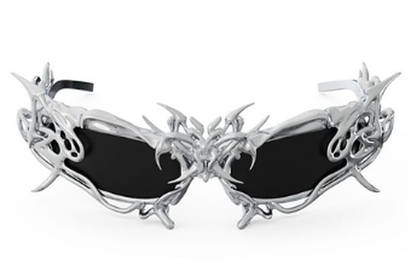
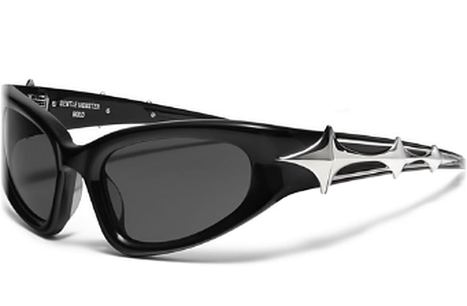
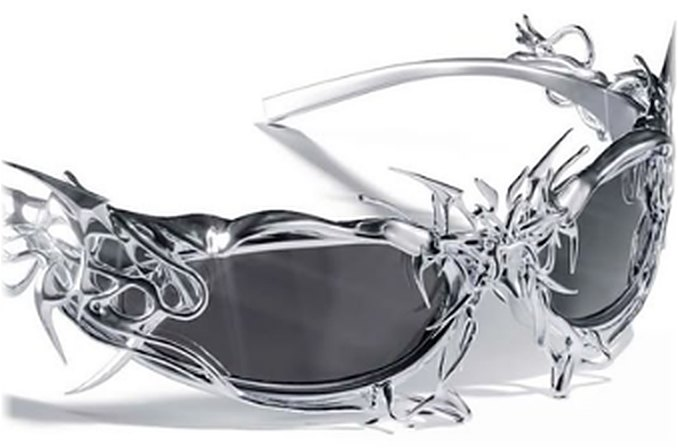
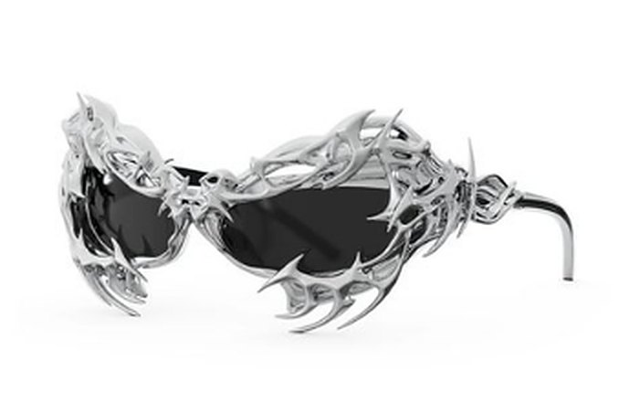

Every pair blocks 100% of UVA and UVB with a mirrored coating built for daily wear.
Thorn, star and lattice temples are cast in recycled alloy, then hand polished.
240gsm cotton, boxy cuts and prints that hold up after fifty washes.
Small batches. When a piece is gone, it is gone. Join the list for first access.
Thorn, star and lattice work, shaped in recycled alloy and polished by hand.



